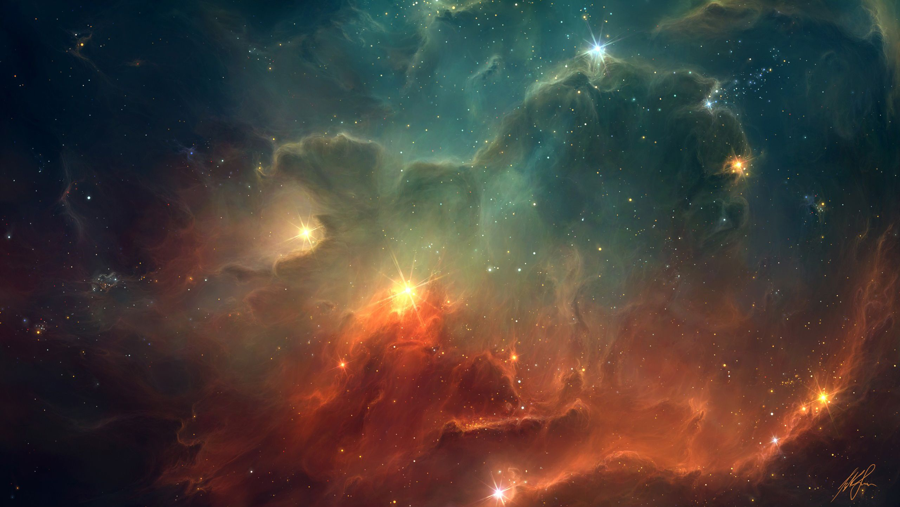
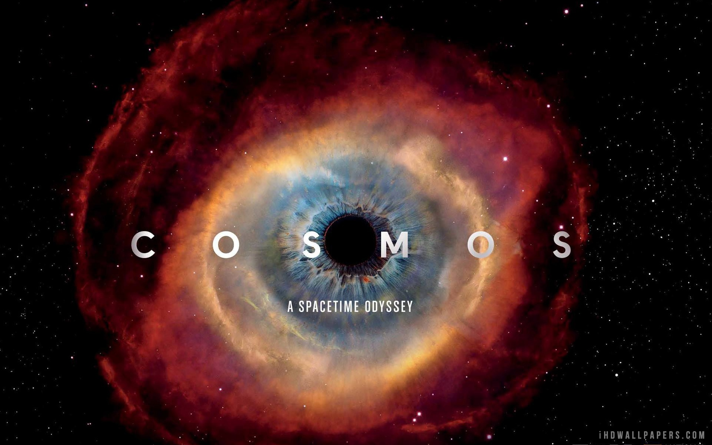

Alam semesta?

Benda-benda langit sudah menarik jutaan orang dari awal peradaban manusia, dibanyak peradaban, para cendikiawan sudah memanfaatkan benda-benda langit untuk berbagai keperluan. Mulai dari berlayar melintasi lautan, menentukan penanggalan bahkan untuk meramal masa depan.Buku ini membahas teori penciptaan alam semesta, dari awal sampai berkembang seperti sekarang dengan milyaran bintang, milyaran galaksi dan milyaran gugus galaksi. Teori asal mula makhluk hidup, teori evolusi juga tidak luput dari buku ini.
Buku ini membahas teori penciptaan alam semesta, dari awal sampai berkembang seperti sekarang dengan milyaran bintang, milyaran galaksi dan milyaran gugus galaksi. Teori asal mula makhluk hidup, teori evolusi juga tidak luput dari buku ini.
Sinopsis

KOSMOS adalah salah satu buku sains paling laris sepanjang sejarah. Dengan prosa jernih memukau, ahli astronomi Carl Sagan mengungkapkan alam semesta yang dihuni suatu bentuk kehidupan yang baru saja mulai berpetualang menjelajahi luasnya antariksa.
Kosmos (1980) adalah buku sains populer karya astronom Carl Sagan. Buku ini berisi 13 bagian yang didasarkan dari 13 episode acara TV Cosmos: A Personal Voyage. Cosmos masuk ke dalam daftar buku terlaris Publishers Weekly selama 50 minggu dan New York Times selama 70 minggu. Pada tahun 1981, buku ini mendapat Penghargaan Hugo untuk kategori buku non-fiksi terbaik.
Penulis
Carl Edward Sagan adalah pria kelahiran Brooklyn, New York, Amerika Serikat, yang lahir pada 9 November 1934. Carl Edward Sagan atau lebih populer dengan nama Carl Sagan adalah seorang ahli astronomi, kosmologi, astrofisika dan penulis sains populer. Ia terlibat dalam berbagai penelitian antariksa, termasuk penelitian ekspedisi wahana Mariner, Viking, Voyager, dan Galileo ke planet-planet tata suya. Kosmos adalah salah satu mahakarya terbesar dari Carl Sagan. Buku ini adalah salah satu buku sains paling laris sepanjang sejarah. Buku ini mengungkapkan alam semesta beserta dengan isinya dengan gaya bahasa yang sangat memukau.
Dalam bukunya, Carl Sagan menceritakan bagaimana ilmu pengetahuan mengalami perkembangan dari waktu ke waktu. Sejak ribuan tahun lalu manusia sudah mulai mempelajari tentang alam semesta itu sendiri. Pengetahuan itu muncul bahkan dalam beberapa legenda dan ilmu pengetahuan yang diwariskan dari generasi ke generasi.
Penutup
Kosmos sangat menarik bagi pecinta sains, buku ini wajib dibaca sekali seumur hidup bagi para pecinta astronomi, ilmuwan-ilmuwan sains, guru-guru sains, mahasiswa bahkan bagi para pelajar untuk meningkatkan keingintahuan kita tentang alam semesta dan membuat kita lebih senang lagi dengan ilmu sains.
Kelebihan
Buku ini menggunakan istilah-istilah sains yang universal sehingga dapat mudah dimengerti oleh orang awam tentang astronomi. Bahasanya yang lugas dan penggambaran yang diberikan oleh penulis mampu membuat pembaca larut dari kisah yang dibawakan olehnya. Buku ini juga banyak menjelaskan tentang perkembangan dunia astronomi dari masa ke masa. Penggunaan bahasa yang lugas nan puitis, mampu memberikan gambaran kepada pembaca untuk mempelajari lebih dalam tentang angkasa luas.
Kekurangan
Kosmos bukanlah mahakarya yang sangat sempurna, buku ini juga tidak luput dari kekurangan. Penempatan dan tata letak foto yg ditampilkan pada buku kurang tersusun dengan baik, foto yang disuguhkan oleh sang penulis hanya di simpan pada halaman 213 sampai 230 saja. Padahal topik yang terkait pada halaman sebelumnya tidak ditampilkan foto yang terkait dengan konteks bahasan.